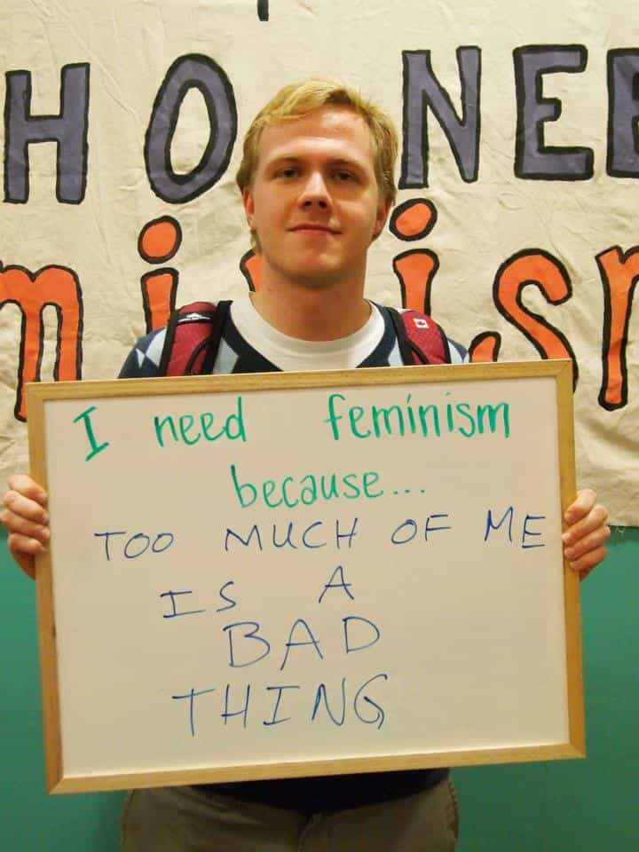
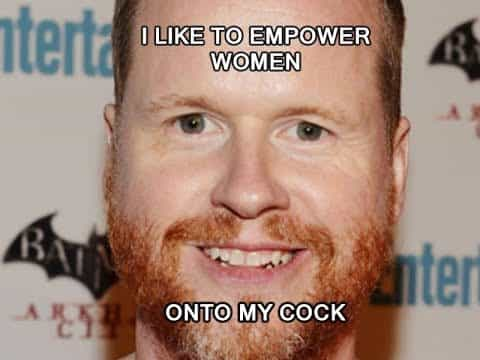

…one guy proposed the “hottest” girls in our class. The other did the same. They both then asked me to rank the girls in our cohort in the order I wanted to get with. My alarmed heart bolted blood to my cheeks… I discussed which girls were hot.
— Daniel Hanrahan describing how he supposedly became complicit in “rape” and “rape culture”
An Australian studying on a scholarship at Harvard’s Kennedy School of Government has sensationally declared that rating the attractiveness of women encourages and enables rape. Daniel Hanrahan, who says he didn’t challenge male peers talking about good-looking classmates, wrote that “[m]y silence lies on a continuum of complicity—complicity that allows sexual assault to occur.”
That The Harvard Crimson allowed this piece to run is a testament to how prevalent Daniel Hanrahan’s views are on campus, at a minimum amongst those in student leadership and related positions. The difference is that up until now most SJWs have been unwilling to verbalize these nutty views as explicitly as he has. Hanrahan’s conflation of normal male sexual desire with rape is chilling, particularly in passages like this one:
Avoiding small confrontations over sexist comments and behaviors [i.e. rating women’s attractiveness] is what allows a rape culture, an environment where rape is prevalent—like at Harvard—to build.

People don’t just act this way when writing for The Harvard Crimson.
I have some questions for Master Hanrahan, namely:
- What’s the difference between asking a girl out and rating her attractiveness with your friends? The first instance is implicitly saying that the girl is attractive (for anyone but most male feminists), whereas the second is saying it explicitly.
- Does getting an erection without a woman’s permission enable rape because you’re assuming there’s a chance you could have sex with her? Toxic masculine self-entitlement?
- Does mentally rating a girl’s attractiveness further acts of rape as well?
We have known for long enough that male heterosexuality and normal expressions of it are under siege. Hanrahan’s ham-fisted account of his so-called contribution towards “rape” and “rape culture” is another sad instalment of this tale.
Is Daniel Hanrahan’s apparent self-loathing actually an effective mating strategy?

The Joss Whedon strategy works.
Believe it or not, I think it could be. I do not believe that the oft-spread stereotype of male feminists being sexless orbiters explains every case. Especially if a male student has an affluent background, which Daniel Hanrahan may or may not have himself, otherwise ridiculous pandering to SJWs and feminists probably garners a select number of them a fair amount of poontang. They can spend their greater free time ingratiating themselves amongst fellow left-leaning elites on campus, including for the purposes of attracting women. It’s very much a choice of these guys to knife their fellow men in order to make a name for themselves, a sort of leftist social proof.
During my first degree, there were indeed social privileges handed out to some privately-schooled young men who touted feminism (and socialism). Facebook pages where men would stand on campus with placards declaring their allegiance to feminism and “listen and believe” did get some guys laid. Obviously, when male feminists commit themselves to particular rules, they sow the seeds of their possible downfall if a woman later accuses them. A good proportion of the loudest male SJWs, however, will never face the music. At the very least, non-gay men who support SJW causes at universities are doing so in the somewhat realistic hope of getting pussy for their efforts. It’s obsequious, cowardly, and not guaranteed to work, yet it can pay dividends.
Male feminism is akin to a raffle or lottery–the chances of winning something decent may be only 10% in some instances (0r 1% or 0.1%), but that doesn’t stop people from spending tens or hundreds of millions of dollars on tickets. At Harvard of all places, someone like Daniel Hanrahan is probably banking on a very good return on investment by pushing his highly anti-male brand of feminism, whether that’s through access to women now, or a future career in politics, social advocacy, or in the corporate world.
Where to next?
Before finishing here, I should discuss some key ways men in which can protect themselves or carve out something good in the current environment, an environment where finding a woman attractive supposedly amounts to supporting rape. More attacking strategies should be employed sparingly a lot of the time, so be prepared to regularly play a proactive defense.
Keep messages and other information, but realize you can’t store or prevent everything
If someone takes offense at what you said very recently, that’s one thing. But recent times have shown how innocuous events from years or decades ago can be used against men through false rape or “sexual harassment” claims, even when the activities were 20,000 leagues below rape. Having access to some of your past conversations about events, or at least the context surrounding them (for sexual relationships most of all), can help you. Give up on the idea of saving everything to prevent false accusations, though. Unless you plan to have a GoPro switched on every second of your life, that is.
Self-improvement, self-improvement, self-improvement
As deleterious as many things are in our social and political world at the moment, there is no excuse for men abstaining from self-improvement—professionally, educationally, physically, financially, socially, and, of course, game-wise. This self-improvement will not only help you weather a future personal firestorm, God forbid, it is what men are built for in the first place. We should all have a mission. Sex and women are important, but don’t seek your entire validation from them.
Seek out like-minded people
They do not have to be readers of Return Of Kings. They do not have to have explicit political opinions or mouth off at feminism. All you require is people who are not infected by SJW ideology and are implicitly quite resistant to it. Perhaps your workplace is full of obedient leftists drones, so find enjoyable people outside it. Sometimes you may feel like The Last Man in Europe (George Orwell’s original title for 1984) and it is up to you to try and avoid that. Plus, from what we know, there are still some folks at Harvard who don’t feel ashamed about rating girls’ attractiveness!
The modern-day West is bad, let’s be honest. Nonetheless, masculine men have a reasonably wide scope to choose how they respond to appalling social trends, like other men effectively trying to shame or criminalize (that’s coming next) rating how attractive a girl is. We can crawl into our shells and pretend the world doesn’t exist in the way it does, or we can recognize the situation for what it is and keep moving in spite of it.
Read More: Liberal Harvard Professors Are Now “Rape Apologists” For Defending Due Process